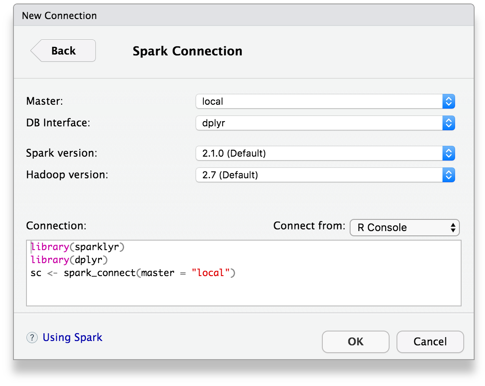

sparklyr::spark_install(version = "2.1.0")Deployment and Configuration
Deployment
There are two well supported deployment modes for sparklyr:
- Local — Working on a local desktop typically with smaller/sampled datasets
- Cluster — Working directly within or alongside a Spark cluster (standalone, YARN, Mesos, etc.)
Local Deployment
Local mode is an excellent way to learn and experiment with Spark. Local mode also provides a convenient development environment for analyses, reports, and applications that you plan to eventually deploy to a multi-node Spark cluster.
To work in local mode you should first install a version of Spark for local use. You can do this using the spark_install function, for example:
To connect to the local Spark instance you pass “local” as the value of the Spark master node to spark_connect:
library(sparklyr)
sc <- spark_connect(master = "local")For the local development scenario, see the Configuration section below for details on how to have the same code work seamlessly in both development and production environments.
Cluster Deployment
A common deployment strategy is to submit your application from a gateway machine that is physically co-located with your worker machines (e.g. Master node in a standalone EC2 cluster). In this setup, client mode is appropriate. In client mode, the driver is launched directly within the spark-submit process which acts as a client to the cluster. The input and output of the application is attached to the console. Thus, this mode is especially suitable for applications that involve the REPL (e.g. Spark shell). For more information see Submitting Applications.
To use spaklyr with a Spark cluster you should locate your R session on a machine that is either directly on one of the cluster nodes or is close to the cluster (for networking performance). In the case where R is not running directly on the cluster you should also ensure that the machine has a Spark version and configuration identical to that of the cluster nodes.
The most straightforward way to run R within or near to the cluster is either a remote SSH session or via RStudio Server.
In cluster mode you use the version of Spark already deployed on the cluster node. This version is located via the SPARK_HOME environment variable, so you should be sure that this variable is correctly defined on your server before attempting a connection. This would typically be done within the Renviron.site configuration file. For example:
SPARK_HOME=/opt/spark/spark-2.0.0-bin-hadoop2.6To connect, pass the address of the master node to spark_connect, for example:
library(sparklyr)
sc <- spark_connect(master = "spark://local:7077")For a Hadoop YARN cluster, you can connect using the YARN master, for example:
library(sparklyr)
sc <- spark_connect(master = "yarn-client")If you are running on EC2 using the Spark EC2 deployment scripts then you can read the master from /root/spark-ec2/cluster-url, for example:
library(sparklyr)
cluster_url <- system('cat /root/spark-ec2/cluster-url', intern=TRUE)
sc <- spark_connect(master = cluster_url)Livy Connections
Livy, “An Open Source REST Service for Apache Spark (Apache License)” , is available starting in sparklyr 0.5 as an experimental feature. Among many scenarios, this enables connections from the RStudio desktop to Apache Spark when Livy is available and correctly configured in the remote cluster.
To work with Livy locally, sparklyr supports livy_install() which installs Livy in your local environment, this is similar to spark_install(). Since Livy is a service to enable remote connections into Apache Spark, the service needs to be started with livy_service_start(). Once the service is running, spark_connect() needs to reference the running service and use method = "Livy", then sparklyr can be used as usual. A short example follows:
livy_install()
livy_service_start()
sc <- spark_connect(master = "http://localhost:8998", method = "livy")
copy_to(sc, iris)
spark_disconnect(sc)
livy_service_stop()Connection Tools
You can view the Spark web UI via the spark_web function, and view the Spark log via the spark_log function:
You can disconnect from Spark using the spark_disconnect function:
spark_disconnect(sc)Collect
The collect function transfers data from Spark into R. The data are collected from a cluster environment and transfered into local R memory. In the process, all data is first transfered from executor nodes to the driver node. Therefore, the driver node must have enough memory to collect all the data.
Collecting data on the driver node is relatively slow. The process also inflates the data as it moves from the executor nodes to the driver node. Caution should be used when collecting large data.
The following parameters could be adjusted to avoid OutOfMemory and Timeout errors:
- spark.executor.heartbeatInterval
- spark.network.timeout
- spark.driver.extraJavaOptions
- spark.driver.memory
- spark.yarn.driver.memoryOverhead
- spark.driver.maxResultSize
Configuration
This section describes the various options available for configuring both the behavior of the sparklyr package as well as the underlying Spark cluster. Creating multiple configuration profiles (e.g. development, test, production) is also covered.
Config Files
The configuration for a Spark connection is specified via the config parameter of the spark_connect function. By default the configuration is established by calling the spark_config function. This code represents the default behavior:
spark_connect(master = "local", config = spark_config())By default the spark_config function reads configuration data from a file named config.yml located in the current working directory (or in parent directories if not located in the working directory). This file is not required and only need be provided for overriding default behavior. You can also specify an alternate config file name and/or location.
The config.yml file is in turn processed using the config package, which enables support for multiple named configuration profiles.
Package Options
There are a number of options available to configure the behavior of the sparklyr package:
For example, this configuration file sets the number of local cores to 4 and the amount of memory allocated for the Spark driver to 4G:
default:
sparklyr.cores.local: 4
sparklyr.shell.driver-memory: 4GNote that the use of default will be explained below in Multiple Profiles.
Spark
| Option | Description |
|---|---|
sparklyr.shell.* |
Command line parameters to pass to spark-submit. For example, sparklyr.shell.executor-memory: 20G configures --executor-memory 20G (see the Spark documentation for details on supported options). |
Runtime
| Option | Description |
|---|---|
sparklyr.cores.local |
Number of cores to use when running in local mode (defaults to parallel::detectCores). |
sparklyr.sparkui.url |
Configures the url to the Spark UI web interface when calling spark_web. |
sparklyr.defaultPackages |
List of default Spark packages to install in the cluster (defaults to “com.databricks:spark-csv_2.11:1.3.0” and “com.amazonaws:aws-java-sdk-pom:1.10.34”). |
sparklyr.sanitize.column.names |
Allows Spark to automatically rename column names to conform to Spark naming restrictions. |
Diagnostics
| Option | Description |
|---|---|
sparklyr.backend.threads |
Number of threads to use in the sparklyr backend to process incoming connections form the sparklyr client. |
sparklyr.app.jar |
The application jar to be submitted in Spark submit. |
sparklyr.ports.file |
Path to the ports file used to share connection information to the sparklyr backend. |
sparklyr.ports.wait.seconds |
Number of seconds to wait while for the Spark connection to initialize. |
sparklyr.verbose |
Provide additional feedback while performing operations. Currently used to communicate which column names are being sanitized in sparklyr.sanitize.column.names. |
Spark Options
You can also use config.yml to specify arbitrary Spark configuration properties:
| Option | Description |
|---|---|
spark.* |
Configuration settings for the Spark context (applied by creating a SparkConf containing the specified properties). For example, spark.executor.memory: 1g configures the memory available in each executor (see Spark Configuration for additional options.) |
spark.sql.* |
Configuration settings for the Spark SQL context (applied using SET). For instance, spark.sql.shuffle.partitions configures number of partitions to use while shuffling (see SQL Programming Guide for additional options). |
For example, this configuration file sets a custom scratch directory for Spark and specifies 100 as the number of partitions to use when shuffling data for joins or aggregations:
default:
spark.local.dir: /tmp/spark-scratch
spark.sql.shuffle.partitions: 100User Options
You can also include arbitrary custom user options within the config.yml file. These can be named anything you like so long as they do not use either spark or sparklyr as a prefix. For example, this configuration file defines dataset and sample-size options:
default:
dataset: "observations.parquet"
sample-size: 10000Multiple Profiles
The config package enables the definition of multiple named configuration profiles for different environments (e.g. default, test, production). All environments automatically inherit from the default environment and can optionally also inherit from each other.
For example, you might want to use a distinct datasets for development and testing or might want to use custom Spark configuration properties that are only applied when running on a production cluster. Here’s how that would be expressed in config.yml:
default:
dataset: "observations-dev.parquet"
sample-size: 10000
production:
spark.memory.fraction: 0.9
spark.rdd.compress: true
dataset: "observations.parquet"
sample-size: nullYou can also use this feature to specify distinct Spark master nodes for different environments, for example:
default:
spark.master: "local"
production:
spark.master: "spark://local:7077"With this configuration, you can omit the master argument entirely from the call to spark_connect:
sc <- spark_connect()Note that the currently active configuration is determined via the value of R_CONFIG_ACTIVE environment variable. See the config package documentation for additional details.
Tuning
In general, you will need to tune a Spark cluster for it to perform well. Spark applications tend to consume a lot of resources. There are many knobs to control the performance of Yarn and executor (i.e. worker) nodes in a cluster. Some of the parameters to pay attention to are as follows:
- spark.executor.heartbeatInterval
- spark.network.timeout
- spark.executor.extraJavaOptions
- spark.executor.memory
- spark.yarn.executor.memoryOverhead
- spark.executor.cores
- spark.executor.instances (if is not enabled)
Example Config
Here is an example spark configuration for an EMR cluster on AWS with 1 master and 2 worker nodes. Eache node has 8 vCPU and 61 GiB of memory.
| Parameter | Value |
|---|---|
| spark.driver.extraJavaOptions | append -XX:MaxPermSize=30G |
| spark.driver.maxResultSize | 0 |
| spark.driver.memory | 30G |
| spark.yarn.driver.memoryOverhead | 4096 |
| spark.yarn.executor.memoryOverhead | 4096 |
| spark.executor.memory | 4G |
| spark.executor.cores | 2 |
| spark.dynamicAllocation.maxExecutors | 15 |
Configuration parameters can be set in the config R object or can be set in the config.yml. Alternatively, they can be set in the spark-defaults.conf.
Configuration in R script
config <- spark_config()
config$spark.executor.cores <- 2
config$spark.executor.memory <- "4G"
sc <- spark_connect(master = "yarn-client", config = config, version = '2.0.0')Configuration in YAML script
default:
spark.executor.cores: 2
spark.executor.memory: 4GRStudio Server
RStudio Server provides a web-based IDE interface to a remote R session, making it ideal for use as a front-end to a Spark cluster. This section covers some additional configuration options that are useful for RStudio Server.
Connection Options
The RStudio IDE Spark pane provides a New Connection dialog to assist in connecting with both local instances of Spark and Spark clusters:

You can configure which connection choices are presented using the rstudio.spark.connections option. By default, users are presented with possibility of both local and cluster connections, however, you can modify this behavior to present only one of these, or even a specific Spark master URL. Some commonly used combinations of connection choices include:
| Value | Description |
|---|---|
c("local", "cluster") |
Default. Present connections to both local and cluster Spark instances. |
"local" |
Present only connections to local Spark instances. |
"spark://local:7077" |
Present only a connection to a specific Spark cluster. |
c("spark://local:7077", "cluster") |
Present a connection to a specific Spark cluster and other clusters. |
This option should generally be set within Rprofile.site. For example:
options(rstudio.spark.connections = "spark://local:7077")Spark Installations
If you are running within local mode (as opposed to cluster mode) you may want to provide pre-installed Spark version(s) to be shared by all users of the server. You can do this by installing Spark versions within a shared directory (e.g. /opt/spark) then designating it as the Spark installation directory.
For example, after installing one or more versions of Spark to /opt/spark you would add the following to Rprofile.site:
options(spark.install.dir = "/opt/spark")If this directory is read-only for ordinary users then RStudio will not offer installation of additional versions, which will help guide users to a version that is known to be compatible with versions of Spark deployed on clusters in the same organization.